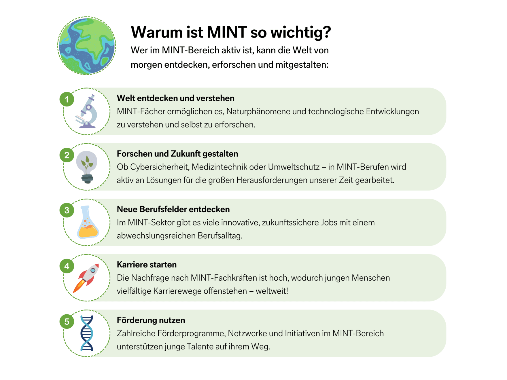

🧪 MINT
Unter dem Begriff „MINT-Fächer“ werden die Disziplinen Mathematik, Informatik, Naturwissenschaften und Technik zusammengefasst. Am GREM ist es uns ein besonderes Anliegen, unseren Schülerinnen und Schülern neben dem sprachlichen und musisch-künstlerischen Schwerpunkt (SOON) auch im MINT-Bereich ein attraktives und vielfältiges Angebot zu machen. MINT wird an unserer Schule in vielen Bereichen gelebt – vom Fach Informatik ab Klasse 5 über zahlreiche naturwissenschaftliche Wettbewerbe bis hin zu Leistungskursen in der Oberstufe. Im Folgenden stellen wir exemplarisch einige zentrale Säulen unseres MINT-Konzepts vor.

🧮 Sekundarstufe I
Bereits in der Sekundarstufe I haben unsere Schülerinnen und Schüler vielfältige Möglichkeiten, über den regulären Unterricht in Mathematik, Physik, Chemie, Biologie und Informatik hinaus eigene Interessen und Talente im MINT-Bereich zu entdecken und weiterzuentwickeln. Dazu zählen etwa Mathematikwettbewerbe (wie der Känguru-Wettbewerb oder die Mathe-Olympiade), die Robotics-AG (ab Klasse 5) sowie Projekte und Wettbewerbe wie Robot-Performance, RobotGame und die Science League in Kooperation mit dem MINT-Zentrum Duisburg (zdi). In diesen Bereichen konnte das GREM in den vergangenen Jahren immer wieder große Erfolge erzielen. Besondere Förderangebote richten sich an leistungsstärkere Schülerinnen und Schüler – beispielsweise im Rahmen der individuellen Förderung für unsere „Cleverixe“ oder durch die Teilnahme an Erasmusprojekten. Seit 2003 engagieren wir uns in internationalen Programmen wie Comenius oder Erasmus+, bei denen technische Themen auch grenzüberschreitend in Zusammenarbeit mit Partnerschulen realisiert werden. Zuletzt standen hier ökologische Fragestellungen und erneuerbare Energien im Mittelpunkt. Auch die Verbindung von MINT und Sprache wird bei uns gezielt gefördert: So findet in Jahrgangsstufe 8 bilingualer Biologieunterricht auf Englisch statt. Zudem können Schülerinnen und Schüler in den Jahrgangsstufen 9 und 10 im Wahlpflichtbereich II das interdisziplinäre Fach Natur und Technik wählen. Ein zukunftsweisendes Projekt ist der Aufbau des Creativ Studios – eines innovativen, multimedialen Lernraums. Hier sollen Schülerinnen und Schüler mit Audio-, Video- und Grafiksoftware arbeiten sowie Zugang zu CAD-Programmen, mehreren 3D-Druckern und VRTechnik erhalten. Ziel ist es, sie bestmöglich auf naturwissenschaftlich-technische Berufsfelder vorzubereiten. Darüber hinaus ist eine Kooperation mit der Hochschule Rhein-Waal in KampLintfort und dem dortigen FabLab – einem o,enen Labor für Schülerinnen und Schüler, Studierende und Start-ups – für die kommenden Jahre geplant.
🧬 Sekundarstufe II
In der Sekundarstufe II stehen neben Grund- und Leistungskursen in Mathematik, Biologie, Chemie und Physik auch bilinguale Angebote zur Verfügung: So kann Biologie weiterhin auf Englisch belegt werden, wodurch in der Mittelstufe erworbene Kompetenzen kontinuierlich bis zum Abitur ausgebaut werden können. Seit vielen Jahren bieten wir im MINT-Bereich ein breit gefächertes und qualitativ hochwertiges Angebot. Die Erfolge unserer Schülerinnen und Schüler bei Wettbewerben belegen regelmäßig das hohe Niveau: So stellte das GREM 2012 beispielsweise einen Preisträger im Bundeswettbewerb Jugend forscht im Fach Physik sowie mehrere Landessieger in Roboterwettbewerben des zdi.
🏆 GREM? Ausgezeichnet!
Seit 2015 ist das GREM offiziell MINT-EC-Schule (EC = Excellence) und wurde 2024 erfolgreich rezertifiziert. Diese Auszeichnung würdigt und bestätigt unsere Arbeit im MINT-Bereich. Als Teil des MINT-EC-Netzwerks erhalten wir Zugang zu exklusiven Förder- und Weiterbildungsangeboten für Schülerinnen, Schüler und Lehrkräfte. Darüber hinaus stellen wir unseren Abiturientinnen und Abiturienten neben dem Zeugnis der Allgemeinen Hochschulreife.